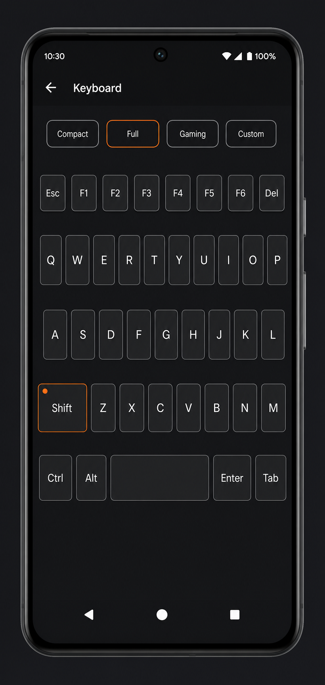
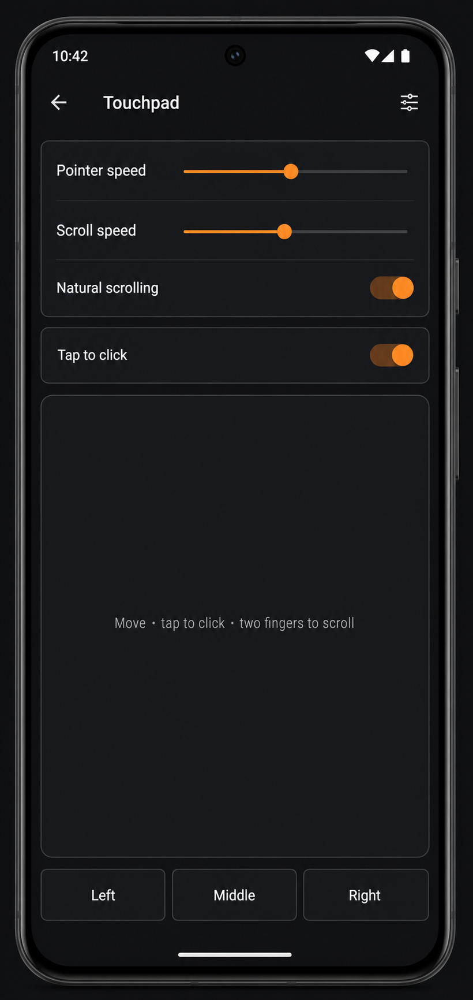
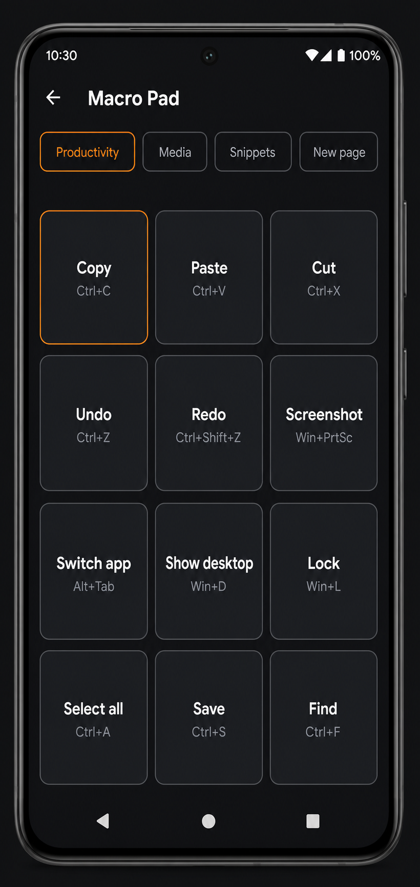
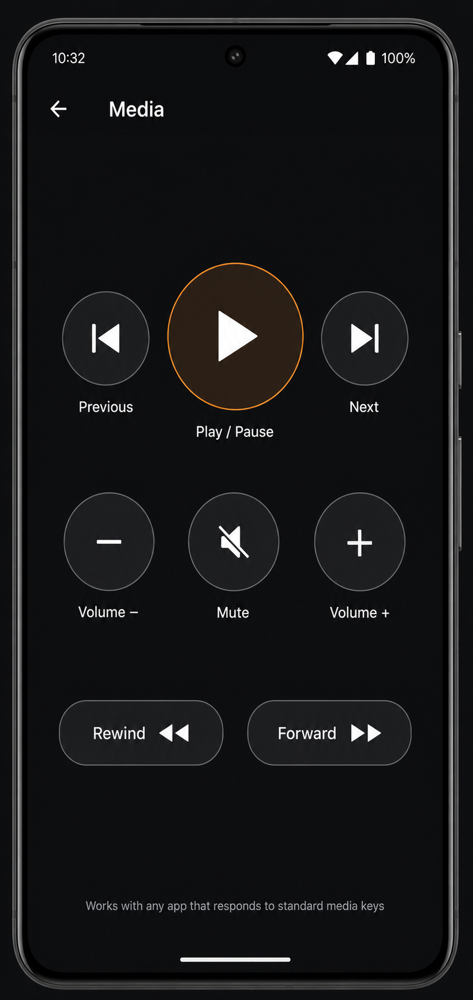
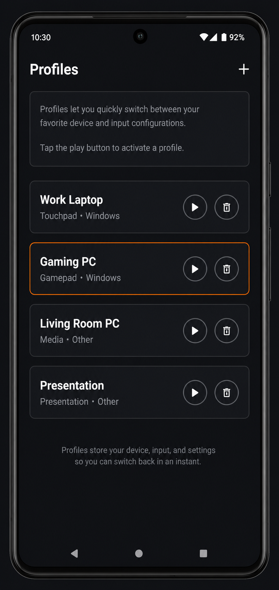
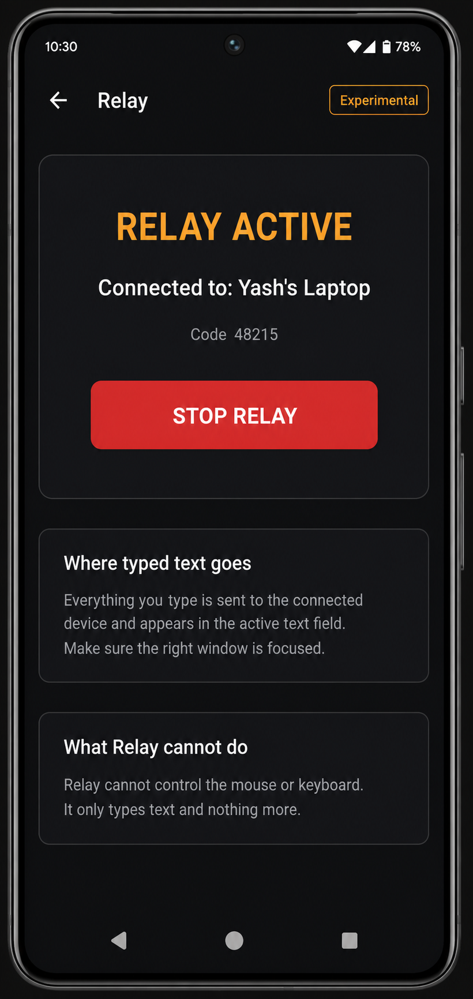

Everything a pocket input device should be
One pairing, seven control modes, deep customization — and honest labels everywhere about what works where.
Keyboard
A keyboard built for controlling a computer, not for texting. Full desktop rows when you need them, a one-handed compact layout when you don't, a gaming cluster for WASD titles, and a custom layout you design yourself.
- Real modifiers: Ctrl, Alt, Win/Cmd, Shift — tap for sticky, hold to lock
- Function row, navigation cluster, Esc, Tab, Caps Lock with host LED sync
- Auto-repeat on hold, haptic feedback options
- Host keyboard layout setting so text lands correctly on non-US computers

Touchpad
The whole screen is the surface. One finger moves the cursor, two fingers scroll vertically and horizontally, a quick tap clicks, a two-finger tap right-clicks, press-and-hold drags with drag lock.
- Adjustable pointer speed, scroll speed, natural scrolling
- Tap-to-click and drag lock toggles
- Explicit left / middle / right buttons for precision work
- Keep-screen-on while you're controlling

Gamepad
Sticks with adjustable dead zones, an eight-way D-pad, analog triggers, bumpers, stick clicks, start/select/guide. Move and resize every control, and save profiles per game.
- Two output modes, honestly labeled: real gamepad, or keyboard & mouse
- Keyboard & mouse mode works in games with no controller support — even Minecraft Java
- Presets for controller games, racing, and keyboard-era games
- Steam and SDL games see a standard generic HID controller

Macro Pad & Custom surfaces
Pages of twelve big buttons. Copy, paste, undo, screenshot, Alt+Tab, show desktop, lock, media keys, your own text snippets and waits. Everything runs over standard keyboard and media keys — unlike Stream Deck Mobile or Macro Deck, there is no desktop server to install.
- OS-aware: Copy is Ctrl+C on Windows and Cmd+C on a Mac
- Multiple pages; starter decks for streaming, editing, music, presenting
- Long-press any button to edit it

Media & Presentation
Media: transport, volume, mute and seek with big touch targets for the couch. Presentation: giant next/previous buttons, F5 start, Esc end, a B-key blackout, and a count-up timer — with a choice of arrow keys, Page keys, or N/P advance to match your software.

Profiles & devices
Profiles bundle a mode, keyboard layout, gamepad profile and deck page — Work Laptop opens the touchpad with Mac shortcuts, Gaming PC opens the gamepad with your layout. Bind a profile to a computer and it applies automatically when you connect.

Elevon Relay
The reverse direction: your laptop's keyboard types on your phone, through the browser, end-to-end encrypted with a code you compare. Nothing installed on the laptop.
